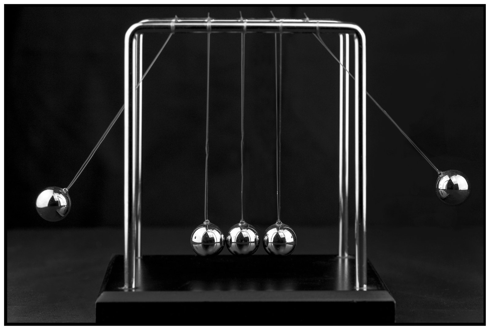

Executive Summary
Simulated trajectories have served as the answer key for robot learning and synthetic data pipelines for years. This report grades that answer key. The subject is not generated video but the physics engine that generated video was being graded against. Auditing an output and validating the standard used to audit it are questions at different levels, and until now the second one has been mostly empty.
The GAUGE benchmark, released in August 2026, captured real trajectories with infrared motion capture, measured friction, restitution, fabric stiffness and Young's modulus separately, mapped those values into each engine's parameters, and then placed Isaac Sim, Genesis and Newton in identical situations. The grading yardstick is the repeatability of the measurement itself. On smooth sliding and spinning rigid motion the engines mostly landed near that yardstick, but at the instant a ball bounces, even the best score drifted to 15.6 times the measurement's own repeat error. No engine was uniformly good, and each was strong in a different place.
This is not mislabeled data. The labels are perfect and the distribution is balanced; what wobbles is the frame of reference. Conventional data quality checks are structurally unable to catch this failure mode. So the second half of this report asks where a new check belongs, and what a team without a capture rig can do today.
0
engines good across the board
Across 14 compared tasks, none handled rigid bodies, cloth and foam together
15.6×
best score at impact contact
On the bouncing ball, even the leading engine drifted to 15.6× the measurement's repeat error
128×
worst score when cloth is flung
The same satin scores 0.73× when stretched slowly and 128× when flung fast
0.20
momentum transfer, Newton's cradle
1.0 is the measured level. Neither engine produced any rest interval at all
Nobody was grading the answer key
The first number anyone shopping for a robot simulator runs into is not accuracy but speed. Genesis leads with 43 million frames per second, 430,000 times real time. Isaac Sim talks about parallel environment counts and GPU throughput. Newton shows a robot walking over snow and gravel. All three describe how fast their engine runs with great precision, and none of them appears to publish a number for how far its output drifts from a measured trajectory.
Genesis states the conditions behind that 43 million figure in its own materials. It is aggregate throughput across thousands of parallel environments on a single GPU, in a minimal scene holding one ground plane and one robot arm. Which also means a scene with almost no contact. NVIDIA manages contact accuracy a different way. It publishes tuning guides for knobs such as contact offset, which sets how far from a collision shape a contact constraint starts forming, and maintains a table of PhysX's known limitations and workarounds. Instead of publishing a validated error envelope, the structure hands the accuracy judgment to the user. From the user's seat there is no way to know how far a given configuration sits from reality.
1.1Earlier work wrote its answers with the exam in hand
It is not that nobody had compared a simulator against measurement. Some work matched rigid-body manipulation trajectories or high-speed impacts against physical instrumentation, and other experiments bent and twisted rods and plates to confirm scaling laws. Reviewing that lineage, the GAUGE authors point to two flaws. One is that each study stayed inside a single object class. The other matters more. In the paper's own words, several studies "fit simulator parameters using the very observations used for evaluation." That is answering the exam with the exam in hand, so a good score measures the degrees of freedom in the fit rather than the ability of the simulator.
GAUGE closed both gaps at once. Material properties were measured independently of the evaluation before being fed to the engines, and one measurement scheme was carried across rigid bodies, cloth and foam alike. The chain runs in this order. A physical experiment is captured by motion capture to produce the reference trajectory; the same object's material properties are measured on separate instruments; those values are translated into each engine's parameter representation; the engine is rolled out and the resulting trajectory is set against the original reference.
The GAUGE measurement chain. Motion capture supplies the reference trajectory; separate instruments supply the engine inputs. Not fitting parameters to the trajectories used for evaluation is where this departs from earlier work. (arXiv:2608.05948)
1.2What was measured, and how
The reference trajectories came from 16 optical motion-capture cameras recording at 180 Hz inside a 2 m × 2 m × 2 m volume, with sub-millimeter 3D position accuracy and markers that are 6 mm retroreflective spheres weighing 0.5 g. Every task was run 20 independent times, and that repetition is what the grading yardstick later turns out to be. Simulation time steps were matched to the capture rate: 180 Hz for rigid bodies and cloth, raised to 900 Hz for volumetric deformables only, to keep the solvers from diverging numerically.
Four kinds of material property were measured on four different instruments, and each measured value had to be restated in each engine's own vocabulary. The same stiffness becomes a thickness-normalized elastic modulus in Isaac Sim and its reciprocal, a compliance, in Genesis. The table below is that translation sheet.
| Property | How it was measured | How it maps to engine parameters |
|---|---|---|
| Friction coefficient | Inclined-plane method; μ derived from slope and acceleration | Entered directly into each engine's friction parameter |
| Restitution coefficient | Air-bearing rail collision; velocity ratio before and after impact | Entered directly into each engine's restitution parameter |
| Fabric stiffness | Dedicated instrument; warp, weft and bias tension plus cantilever bending | Elastic and bending stiffness in Isaac Sim, compliance in Genesis, triangle-element coefficients in Newton |
| Young's modulus, Poisson's ratio | Compression testing with digital image correlation; fit to the initial linear region of the stress-strain curve | FEM material parameters in Isaac Sim, MPM material parameters in Genesis |
Material measurement and its mapping to engine parameters (arXiv:2608.05948, Appendix A.2.2)
One name in that table stands out on its own. Style3D, which measured the tensile and bending stiffness of the fabrics, does not appear only on the measurement side of this benchmark. The same name sits on Newton's list of cloth backends and among its ecosystem partners. The party measuring what cloth does and the party solving cloth from those measurements have started to overlap under one name. The two activities are different work, but it is worth reading as a signal that measurement-grounded validation is moving out of the papers and into industrial infrastructure.
The authors concede that the translation step itself carries interpretation. The moment a stiffness measured on a bench is restated in each engine's material model, there is room for the choice to favor one engine and penalize another. So the paper publishes its per-engine mapping equations in full. Anyone who disagrees with the results has been handed the means to argue back.
You can't read the scorecard until you set the yardstick
GAUGE does not pit engine A against engine B. It sets how far the measurement departs from itself across 20 repetitions of the same experiment to 1.0, and asks how many times further the engine departs. A real experiment traces a slightly different trajectory every run, because of tiny differences in how a hand releases an object, and that spread becomes the baseline. A score of 1.0 means the engine departs from reality by the same amount reality departs from itself.
Which is why values below 1 are possible. They mean the engine's trajectory landed inside the measurement's own spread, not that the engine is more accurate than reality. A score of 15, conversely, means most of that gap is not random jitter but systematic error produced by the solver. One more caution. Each task measures something different, so position is in millimeters while cloth is expressed in curvature and area. Comparing engines within a row holds; comparing absolute values across rows does not.
What gets measured also changes by task. Where a trajectory exists, two metrics are used together: RMSE, which aligns frames in time order and pools the position deviations as a root mean square, and DTW, which allows some slack along the time axis and asks how similar the shape of the trajectory is. The table below carries only RMSE, but the paper reports both side by side, and the two mostly point the same way. On the bouncing ball, the best score was 15.63× by RMSE and 5.58× by DTW. For a task like Newton's cradle, where distance between trajectories will never expose the failure, the paper looks at something else: the longest interval the middle spheres hold still, and how much momentum crosses from one end to the other in the collision.
The benchmark as a whole is built from 22 task families: 8 rigid-body, 1 cable, 6 cloth and 7 volumetric deformable. Of those, 14 were actually used for the engine comparison. Seven rigid-body, three cloth and four foam tasks fill the table that puts all three engines under identical conditions. Pulling the representative rows out of that table gives the following.
| Task (material) | Metric | Measured baseline | Isaac Sim | Genesis | Newton |
|---|---|---|---|---|---|
| Turntable (metal) | RMSE | 13.26 (7.43) | 0.17× | 0.57× | 20.04× |
| Fabric tension (satin) | RMSE | 0.21 (0.42) | 0.73× | 1.51× | 0.73× |
| Ramp contact (plastic) | RMSE | 12.31 (7.62) | 1.26× | 1.60× | 1.75× |
| Non-smooth contact (plastic) | RMSE | 17.67 (6.19) | 1.53× | 10.04× | 6.05× |
| Fabric bending (satin) | RMSE | 1.92 (0.69) | 7.94× | 11.73× | 19.90× |
| Bouncing ball (rubber) | RMSE | 5.29 (3.60) | 15.63× | 22.50× | 22.71× |
| Foam shear (soft) | RMSE | 5.60 (0.70) | 26.13× | 15.26× | 26.57× |
| Fabric flinging (satin) | RMSE | 0.016 (0.0056) | 128.26× | 8.54× | 9.25× |
| Newton's cradle (metal) | Rest interval / momentum transfer | 0.38 s / 93.02 | 0.00 / 0.20 | no valid rollout | 0.00 / 0.26 |
Every engine column is a multiple of the measured baseline. Lower is better for RMSE; closer to 1.0 is better for rest interval and momentum transfer. Bold marks the best engine in that row. Parentheses in the baseline column give the standard deviation across trials. Observable units differ by task, so comparisons across rows do not hold. (Nine representative rows excerpted from arXiv:2608.05948, Table 3)
Laying the same values on a log scale pushes the high-error tasks to one side. The heavy vertical line is 1.0, and moving right means moving away from measurement. The tasks that stay in the left half involve force applied gradually, such as smooth rotation, sliding and slowly stretched fabric. The ones pushed to the right edge all share one trait: a large amount of energy moving in a very short interval.
The horizontal axis is the multiple of the measurement's repeat error, on a log scale. Left of the orange line is inside the measured spread; right of it is systematic error. The wider the three markers scatter within a row, the more the engines disagree on that physics. (arXiv:2608.05948, Table 3)
What stands out on this map is not the size of the errors but the instability of the ranking. On the turntable, Isaac Sim closes to 0.17×, a sixth of the measured spread, while Newton posts the worst of the three at 20.04×. Flinging fabric reverses the order completely: Genesis leads at 8.54× and Isaac Sim collapses to 128.26×. On foam, Genesis is ahead in tension, shear and torsion, while Newton is better in bending.
For volumetric deformables, though, the floor matters more than the ranking. The authors' summary is blunt regardless of who won: even the best deformable simulation leaves an error an order of magnitude, roughly tenfold, above the measured baseline. Re-reading soft foam shear with DTW, which permits time alignment, gives 16.74× to 29.34×, so changing the metric does not bring the conclusion along with it. This is where picking a winner stops meaning anything.
The paper's synthesis is short. Across rigid bodies, cloth and volumetric deformation, no engine dominates; what emerges instead are complementary solver strengths. Which means the question "which engine is accurate" was badly posed from the start. Every answer has to carry an "at which physics" attached to it.
Why it breaks exactly there
The answer lies in time, not in the kind of material. The authors name three main sources of the remaining error: dynamic contact, high-acceleration cloth motion, and volumetric deformation. As a list those look like three different physics. Yet in all three, a large amount of energy moves in a very short time. The few milliseconds a ball spends touching the floor, the instant a sheet reverses direction and snaps out like a whip, the interval in which a compressed foam redistributes its internal stress. In the quasi-static regime, where force builds slowly, all three engines land close to the measured spread.
3.1Passing slowly is not passing quickly
The heaviest case comes from a single sheet of cloth. On the tension task, where the same satin is pulled slowly, Isaac Sim and Newton both scored 0.73×. That is inside the measured spread, so it passes. Move to the task where the same sheet is snapped like a flick of the wrist, and Isaac Sim drifts to 128.26×. Same material, same measured stiffness parameters, same solver. The only thing that changed is how fast the motion is.
The paper nails the observation down in a single line: quasi-static agreement does not reliably predict fidelity under fast, spatially varying deformation. A validation that says "our simulator passed the static test" guarantees nothing about the dynamic regime. A static test tells you the range you tested, not whether you passed.
3.2Conservation laws leak under a good-looking period
The second crack is quieter. On the pendulum task, Isaac Sim and Newton posted normalized periods of 1.10 and 1.09. By eye or by plot, that is nearly right. Yet energy error accumulates over the same rollout. Raw energy loss scatters between −0.041 and 0.034, on a metric where 0 is ideal. A negative value means not loss but energy appearing out of nowhere. The authors conclude that getting low-frequency motion right implies nothing about impact-resolution accuracy or about energy behavior over long horizons.
Newton's cradle shows the same problem far more starkly. On the physical device, the middle spheres hold still for 0.38 seconds and momentum crosses end to end at an efficiency of 93.02. The engines produced no rest interval at all. Rest time is 0, and normalized momentum transfer is 0.20 and 0.26. Since 1.0 is the measured level, roughly 80% of the momentum went somewhere else. Genesis failed to produce a valid rollout in the first place.

Two metrics diverging in Newton's cradle. The rest interval disappears and most of the momentum never arrives. A demo watched by eye still replays a plausible scene of spheres striking and swinging, but these two observables point to a different world than the measured one. (arXiv:2608.05948, Table 3)
3.3Which solver you inherited guarantees nothing
The three engines use different solvers for different physics domains, and that composition explains roughly half of why the winner flips across the map above. A single engine does not solve every object with a single equation. Rigid bodies get one solver, cloth gets another, and volumetric deformables get a third.
Here is where they part ways. Cloth splits three ways: discretizing the surface into finite elements, iteratively satisfying positional constraints among particles, and descending on deformation energy vertex by vertex. Volumetric deformables split between finite elements on a mesh and methods that move back and forth between particles and a background grid. When the computational skeletons differ that much, an engine's rigid-body score cannot forecast its cloth score. The three columns in the table below are closer to three separate programs filed under one name.
| Engine (version evaluated) | Rigid body | Cloth | 3D deformable |
|---|---|---|---|
| Isaac Sim v6.0.0 | PhysX | Surface FEM | FEM |
| Genesis v1.12.0 | in-house solver | PBD | MPM |
| Newton v1.3.0 | MuJoCo | VBD | not reported |
Solver composition at the time GAUGE ran its evaluation (arXiv:2608.05948)
The industry has a habit of inferring accuracy from lineage. Because Genesis and Newton both adopted a MuJoCo-derived GPU backend as their rigid-body core, the reading goes, they inherited a validated contact model and rigid bodies are therefore safe. Measurement does not automatically accept that argument. On the turntable, where sustained rotational friction dominates, the MuJoCo-backed Newton was the worst of the three at 20.04×, while Isaac Sim, often dismissed for its game-graphics PhysX lineage, dominated at 0.17×. What a solver inherited does not predict which tasks it will be strong at.
GAUGE did not grade MuJoCo itself. What appears in the table is Newton, which uses a MuJoCo backend as its rigid-body core, and this paper cannot tell us what a standalone MuJoCo implementation would score on the same tasks. The paper offers no explanation for leaving it out either. Stretching the results above into a verdict on the MuJoCo contact model in general goes past the evidence. What to read is not the lineage but the number each specific combination actually produced.
The three engines are not the same age. Newton was contributed to the Linux Foundation and opened in September 2025, meaning it had been open source for less than a year at the time of this evaluation. Reading it on the same line as a mature commercial engine is unfair. Genesis, likewise, has stated that it fixed defects in box collision and Jacobian computation in its 1.0 release, which is the normal path an open-source project takes toward maturity. What GAUGE graded, though, is v1.12.0, the version after those fixes.
The conclusion is not that the engines are wrong. It is that their strong regions differ, and that no engine is yet even across all of them. The distinction matters because it changes what a practitioner should do. A strategy of "pick the single most accurate engine" does not hold. What you need to know first is which side of the map your own task's physics sits on.
Right shape, wrong scale
GAUGE also turned the same measurement scheme on video world models once. It is a secondary track that put six image-to-video models through five rigid-body tasks, and one result from it has exactly the same structure as the engine story.
There is a metric for how closely the trajectory of an object sliding down a ramp follows the form of constant-acceleration motion. It asks whether the expected linear relationship suffices or whether unexplained curvature remains. The model that scored best on that metric was Cosmos3-Super-I2V. The acceleration back-solved from that model's trajectory, however, was 0.088 m/s². The measured value in the same experiment runs between 2.57 and 2.67 m/s². The model passed the form of the equation of motion while recovering the scale at about 3%. As the authors put it, generated motion can look like a constant-acceleration trajectory over a short window while carrying the wrong physical scale.
Newton's cradle was more blatant. Of the ten reported model configurations, six failed to produce a valid sequence, and the best momentum transfer among those that succeeded stopped at 0.76. Pendulum periods scattered between 1.83 and 17.95 seconds against a measured 1.06. Even the closest value is 73% longer than reality. Negative prompts instructing the model to avoid physics violations produced no consistent improvement.
These numbers sum up why visual review is powerless here. Data that passes a shape metric while getting the scale wrong slips past human eyes and past automated metrics that only look at shape. How to verify the physics of generated video was covered separately in an earlier report, Is Generated Video Physically Correct?. The axis of this report is the engine that has served as the standard for that verification, so the video models stop here.
The frame wobbles, not the label
Run a conventional quality check over a trajectory dataset produced by a simulator and most of it passes. The labels were recorded by the engine itself, so they are more consistent than anything a human annotator produces; the scenarios were sampled evenly, so the distribution is balanced; provenance is fully traceable down to which configuration generated what and when. And a model trained on that data learns the wrong dynamics with great precision.
The error is not in the label layer. The relationship between label and data is perfect; the frame of reference the two sit in has drifted away from reality. Label consistency checks, distribution balance checks and provenance tracking are all tools for inspecting internal consistency, so by construction they cannot catch this class of failure. A separate procedure that compares against an external physical reference is required.
Decompose what GAUGE actually built from the perspective of an inspection tool and three components fall out. Any organization that intends to put a quality check at the physical source layer ends up needing all three, scaled to its own means.
Component 1
A measured reference set
Trajectories actually measured, not simulated. They only work as a reference if the uncertainty is recorded alongside them. Without knowing which millimeter you can trust, the comparison cannot be interpreted.
Component 2
Task-specific observables
What to look at changes with the physics. Sliding is read through position error, the cradle through rest time and momentum transfer, the pendulum through period and energy conservation. One universal distance metric will miss the failure.
Component 3
A repeatability yardstick
Set the pass line as a multiple of the measurement's own repeat error rather than an absolute error. Only then can scores from different tasks be stated in the same language, and the standard survives better equipment.
Of the three, the one most often missing in practice is the third. Many teams set an absolute bar such as "within 5 mm of error," but that bar changes meaning when the task changes and gets tangled up with the precision of the rig. Measure how far the ground truth wanders when it repeats itself, then speak in multiples of that, and the scores for rigid bodies, cloth and foam become comparable in a single sentence. The real contribution of GAUGE is not the 16-camera rig but the way it fixed this yardstick.
This is where the definition of data quality widens by one notch. Quality has mostly meant consistency with the label. For simulation data, consistency with a physical reference has to move in beside it. The two axes are orthogonal. However high the label quality, physical consistency has to be measured separately, and the reverse holds too.
What to trust, and where to start measuring
A rig of 16 sub-millimeter motion-capture cameras is not a realistic option for most teams, so the prescription drawn from these results cannot be "everyone buy instrumentation." The practical move is to divide your confidence in advance by the physical character of the task, and that map can be read without any equipment at all.
6.1The tasks most worth automating sit on the physics the engines get wrong
Below is GAUGE's domain-by-domain performance translated into a working judgment. On the left are the regions where simulation data can be used with relative confidence; on the right are the ones that are dangerous without a measured correction attached.
Relatively safe to trust
- Quasi-static rigid-body motion and manipulation where force builds slowly
- Smooth contact, sliding and sustained rotation
- Temporal structure such as the period of low-frequency oscillation
- Fabric deformation under slow stretching or unfolding
Needs measured correction
- Impact, striking and insertion, where collision dominates the manipulation
- Fast cloth and cable handling, throwing and flinging motions
- Work involving soft grippers and volumetric deformables
- Long rollouts where energy error accumulates
The painful part is how much the right-hand list overlaps with the tasks that carry the most industrial value. Part insertion, assembly, garment handling, grasping deformable goods; the work with the strongest automation demand happens to sit on the physics where the engines are weakest. Several studies have reported that simulated performance fails to transfer in contact-dominated manipulation, with gap widths that varied a great deal by task. What GAUGE contributes is putting the question of where that gap opens onto a single common yardstick.
6.2Three things to do today without instrumentation
There are procedures you can start without a capture rig. None of the three requires extra hardware, and each is a scaled-down version of the methodology GAUGE established.
- Measure your own repeatability first. Run the same scenario at the same settings several times and see how far the results scatter. Having a yardstick is the first step in any comparison, and this one can be measured inside the simulator.
- Cross-run two or more engines. Push the same scene through different solvers and flag the intervals where the results diverge. You will not learn which one is right, but you will at least see where neither can be trusted.
- Record where each parameter came from. For a single friction coefficient, note in the dataset metadata whether it was actually measured, taken from literature, or eyeballed. Separating estimates from measurements is by itself enough to narrow down the source of an error later.
6.3What this benchmark does not yet say
The authors state the limitations themselves. The benchmark does cover rigid bodies, cloth and 3D deformables, but the materials handled and the range of calibrated parameters remain narrow. The video-model track is confined to rigid-body tasks that can be evaluated from 2D image trajectories, a representation that is not sufficient for cloth or volumetric deformables. Fluids are absent entirely. It is also a result measured against pinned versions at one point in time, and the main table carries only one representative material per task family.
This table is a photograph taken once. The engines keep getting fixed, and some cells will improve in the next version. What matters is not any particular number but the fact that the method for measuring those numbers again is now public.
Why Pebblous is paying attention
The data quality Pebblous has worked on has mostly lived at the layer of labels, distributions and provenance. This study shows a systematic error sitting below all of that. In a pipeline that uses simulator trajectories as training data, the new inspection item is not how much was generated but where, and by how much, the generated physics departs from reality. There is one more axis to diagnose, and it is orthogonal to the label axis.
From a data quality standpoint, the hardest case is the 3% acceleration seen earlier. A model trained on trajectories like that learns the wrong dynamics very precisely. Existing tools wave through data whose labels are perfect and whose distribution is balanced while its frame of reference has slipped. So an inspection at the physical source layer is not a matter of adding one item to the existing checks. It is a matter of moving where the check is applied down a layer.
Brought down to what customers and partners actually do, the question gets more specific. For a team training tasks like part insertion or garment handling on simulation data, how far to trust and where to attach a measured correction is a decision for today. The two lists in the previous section are that baseline, and the scaled-down procedure for organizations without instrumentation comes down with them. Measuring your own repeatability, cross-running engines, and recording where parameters came from is where it starts.
Structurally, an empty seat becomes visible. Engine vendors have weak incentives to grade their own engines, and users cannot grade anything without instrumentation. Between them there is room for an independent measured reference and a quality diagnosis. That is not the work of building one more engine; it is the work of measuring on top of the ones that exist.
Editor's Note. This report is not written to recommend a product. It is a record of following the question of who validates the answer key for synthetic data one layer further down, from the data side. Hold that question long enough, though, and you arrive somewhere in particular. Seen from a company whose work is diagnosing data quality, data stacked on an unvalidated baseline cannot be called high quality no matter how much of it there is. That is where Pebblous stands with DataClinic.
Pebblous Data Communication Team
August 10, 2026
References
Academic
- 1."GAUGE: A Measurement-Grounded Benchmark for Physical Fidelity in Simulation Engines and Video World Models," arXiv:2608.05948 (2026-08-06). Primary source for this report.
- 2."Isaac Lab: A GPU-Accelerated Simulation Framework for Multi-Modal Robot Learning," arXiv:2511.04831.
- 3."IsaacIPC: Coupling High-Fidelity Simulation and Realistic Rendering for Contact-Rich Robotic Systems," arXiv:2605.24339.
Engine documentation
- 4.Linux Foundation. "Contribution of Newton by Disney Research, Google DeepMind and NVIDIA" (2025-09-29).
- 5.newton-physics/newton (GitHub) · NVIDIA Newton Physics.
- 6.Genesis official site · Genesis AI, "The Role of Simulation in Scalable Robotics, Genesis World 1.0, and the Path Forward".
- 7.NVIDIA. "Isaac Sim Physics Documentation".
Related Pebblous reports
- 8.Is Generated Video Physically Correct? (2026-07-11). Post-hoc physics verification pipelines for generated video.
- 9.The Robot Dataset Landscape. The missing physical proof in Physical AI training data.
- 10.RoboScape. Building physical constraints into the generation step itself.